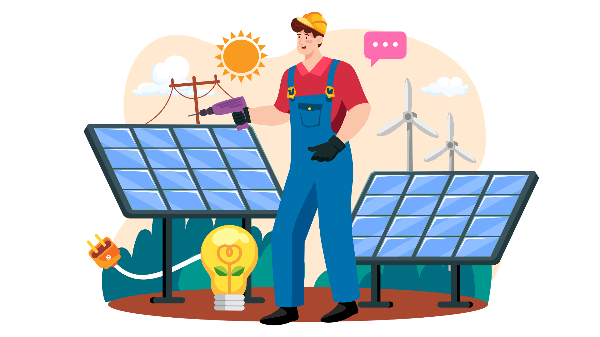

Pembangkit Listrik Tenaga Surya (PLTS) merupakan sistem pembangkit listrik yang memanfaatkan energi cahaya matahari sebagai sumber energi utama. Melalui materi ini, kamu akan mempelajari prinsip kerja PLTS, komponen penyusunnya, serta bagaimana seorang engineer menentukan desain PLTS yang sesuai berdasarkan kondisi suatu wilayah.

15-20 Menit
Engineering Design
10 Submateri
Cahaya matahari membebaskan elektron pada sel surya sehingga menghasilkan arus listrik.
Energi cahaya diubah menjadi energi listrik melalui sel fotovoltaik.
Panel surya menghasilkan arus searah (DC) yang kemudian diubah menjadi arus bolak-balik (AC) menggunakan inverter.
Semakin tinggi intensitas cahaya matahari, semakin besar energi listrik yang dihasilkan.
Perhatikan alur konversi energi berikut untuk memahami bagaimana energi cahaya matahari diubah menjadi energi listrik yang dapat digunakan dalam kehidupan sehari-hari.
Matahari memancarkan energi dalam bentuk cahaya yang menjadi sumber energi utama bagi sistem PLTS.
Sel fotovoltaik pada panel surya menyerap cahaya matahari dan mengubahnya menjadi energi listrik arus searah (DC).
Arus listrik DC dari panel diubah menjadi arus bolak-balik (AC) sehingga dapat digunakan oleh berbagai peralatan listrik.
Energi listrik kemudian dimanfaatkan untuk menyalakan lampu, kipas angin, komputer, dan berbagai peralatan listrik lainnya.
Mengapa listrik yang dihasilkan panel surya harus diubah terlebih dahulu oleh inverter sebelum digunakan oleh peralatan listrik di rumah?
Menyerap cahaya matahari dan mengubahnya menjadi energi listrik melalui sel fotovoltaik.
Mengubah arus searah (DC) menjadi arus bolak-balik (AC) agar dapat digunakan oleh peralatan listrik.
Menyimpan energi listrik sehingga tetap dapat digunakan ketika intensitas cahaya matahari menurun.
Mengatur proses pengisian baterai agar tidak terjadi kelebihan maupun kekurangan pengisian.
Dalam merancang PLTS, seorang engineer tidak hanya memahami cara kerja panel surya, tetapi juga harus menentukan desain yang paling sesuai berdasarkan kondisi wilayah, kebutuhan energi, biaya, dan luas lahan yang tersedia.
Jumlah panel menentukan banyaknya energi listrik yang dapat dihasilkan. Namun penambahan panel juga meningkatkan:
Sudut pemasangan panel mempengaruhi banyaknya cahaya matahari yang diterima. Sudut yang tepat membuat panel bekerja lebih optimal.
Panel surya yang umum digunakan terdiri dari dua jenis utama:
Engineer perlu mengetahui besarnya intensitas matahari untuk menentukan kelayakan lokasi.
Dalam merancang PLTS, seorang engineer tidak selalu memilih jumlah panel yang paling banyak. Desain terbaik adalah desain yang mampu memenuhi kebutuhan energi dengan mempertimbangkan efisiensi, biaya, dan luas lahan yang tersedia.
Setelah mempelajari materi ini, kamu akan diminta menganalisis data suatu wilayah dan menentukan desain PLTS yang paling sesuai. Gunakan pengetahuan yang telah dipelajari sebagai dasar dalam mengambil keputusan selama simulasi.
PLTS telah banyak dimanfaatkan pada atap rumah, sekolah, gedung perkantoran, lampu penerangan jalan (PJU), pompa air tenaga surya, hingga pembangkit listrik skala besar.
Jawablah pertanyaan berikut untuk menguji pemahamanmu: